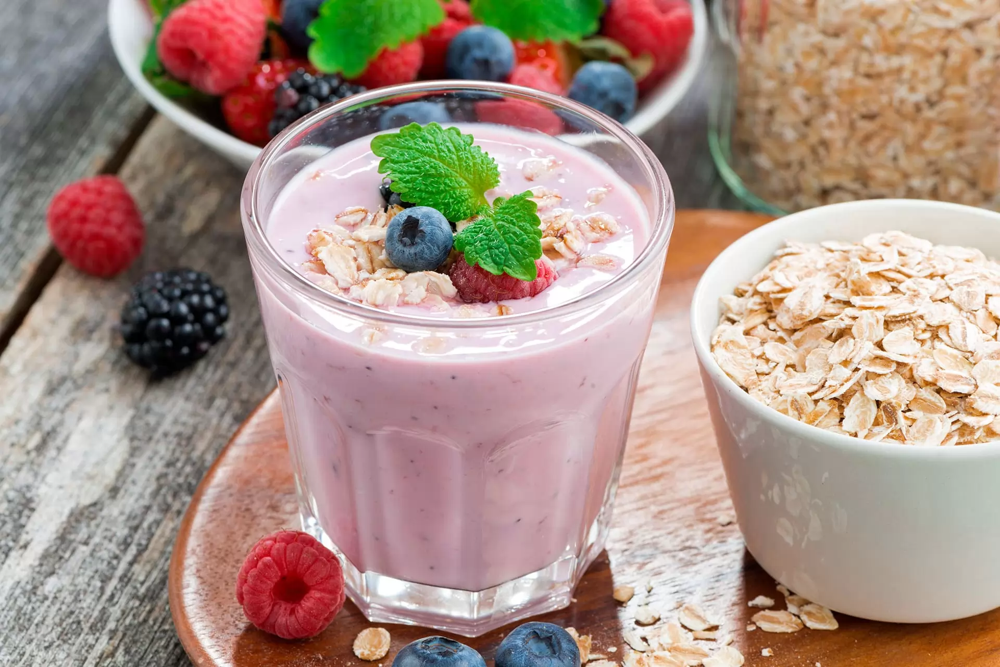
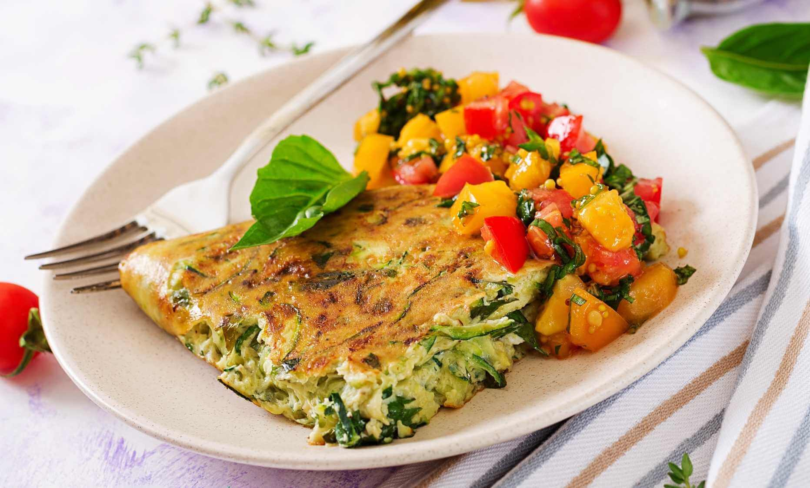

Desayuno

Tostones de Palta y Huevo
Aprende a preparar este rico desayuno con tres simples ingredientes. Con estos sencillos pasos podrás disfrutar de este rico y nutritivo platillo.

Batido de Frutas y Avena
Mezcla frutas frescas con yogur griego y avena en un batido energizante y nutritivo para comenzar el día.

Tortilla de Espinacas y Tomate
Salteadas con espinacas frescas y tomates, prepara una tortilla ligera y llena de vitaminas para un desayuno delicioso y saludable.